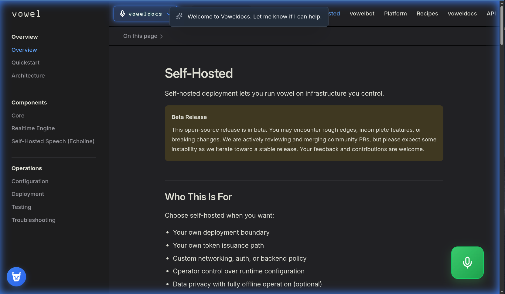

<div
  data-composition-id="turso-rag-sc-i"
  data-start="0"
  data-duration="120"
  data-width="1080"
  data-height="1920"
  style="position: absolute; inset: 0; width: 1080px; height: 1920px"
>
  <div id="scene7" class="scene prime-cta s7-cta">
    <div class="s5-perspective">
      <div class="s5-stage">
        <div class="s5-text-col s7-top-copy">
          <!-- Match scene 5: DM Sans, muted — not monospace / all-caps -->
          <p class="s7-eyebrow" id="s7-eyebrow">What about Conversational Voice?</p>
        </div>
        <div id="s7-zoom-root" class="s5-zoom-root">
          <!-- Doc still → self-host still. Masks paint over baked mic FAB + assistant popover in captures (no DOM faux mic / caption rows). -->
          <div class="s5-shot s7-shot-layers" id="s7-shot">
            <div class="s7-layer" id="talk7">
              <div class="ui3d" aria-hidden="true">
                <div class="ui3d-sway s5-card-tilt" id="sway7-talk">
                  <div class="s7-shot-frame">
                    
                  </div>
                </div>
              </div>
            </div>
            <div class="s7-layer s7-layer-answer" id="self7">
              <div class="ui3d" aria-hidden="true">
                <div class="ui3d-sway s5-card-tilt" id="sway7-self">
                  <div class="s7-shot-frame">
                    
                    <div class="s7-chrome-mask s7-mask-fab" aria-hidden="true"></div>
                    <div class="s7-chrome-mask s7-mask-bottom" aria-hidden="true"></div>
                  </div>
                </div>
              </div>
            </div>
          </div>
        </div>
      </div>
    </div>
  </div>
  <script>
    (function () {
      window.__timelines = window.__timelines || {};
      var tl = gsap.timeline({ paused: true });
      tl.set({}, {}, 120);
      window.__timelines["turso-rag-sc-i"] = tl;
    })();
  </script>
</div>
